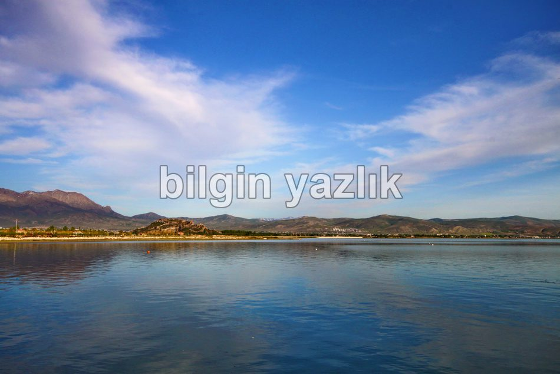
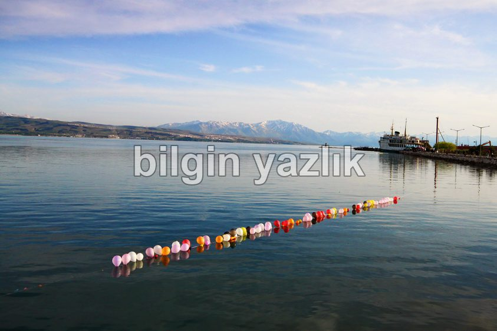
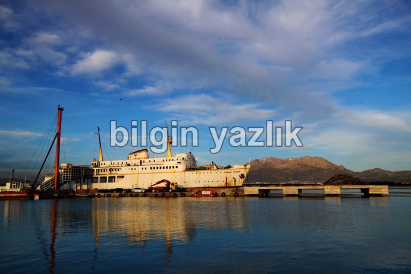
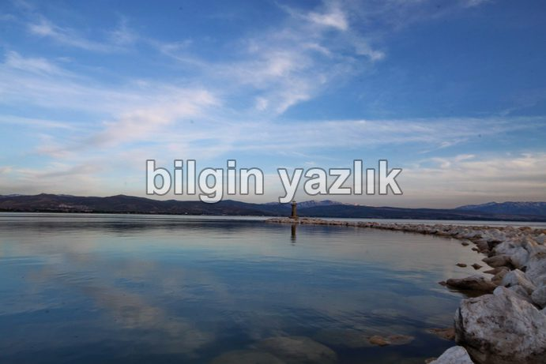
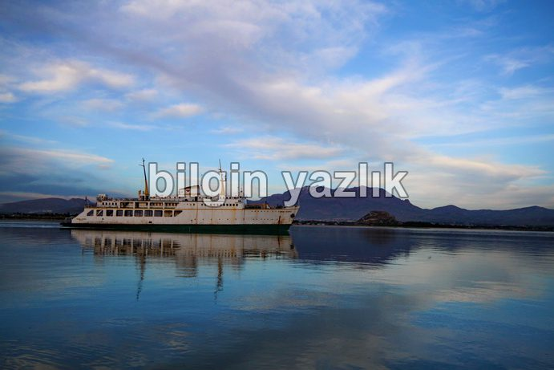
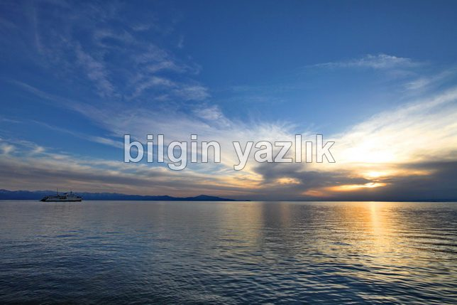
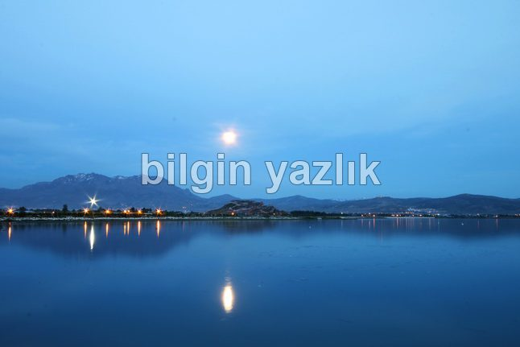
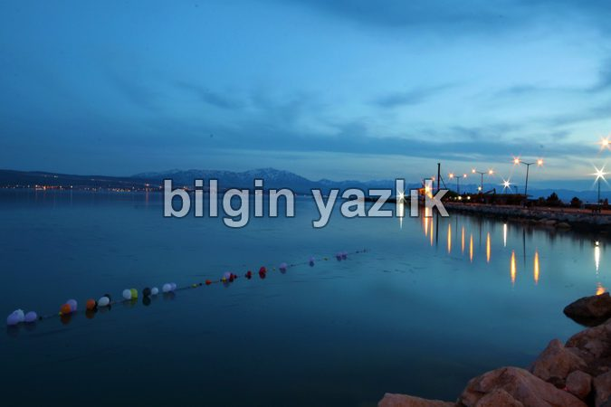

Van Gölü Havzası · 30 Mayıs 2013
Van Vapur İskelesi
Van Gölü (ya da halk arasındaki tabirle Van Denizi)’nün vapurların yanaştığı güzel bir iskelesi var. Van – Tatvan seferini yapan yorgun feribotlar bu iskelede dinleniyorlar. Restoranlar, piknik alanları, oturma alanları ile bezeli bu güzelim iskeleden gün batımını seyretmenin muazzam bir hazzı var. Van kalesi, Erek dağı, Süphan dağı bu noktadan panoramik bir görüntü veriyorlar. Sözün özü Van’a gitmişken bu iskeleyi görmeden Van’dan sakın ayrılmayın.








Bu yazı taliyol arşivinden taşınmıştır. · özgün kayıt